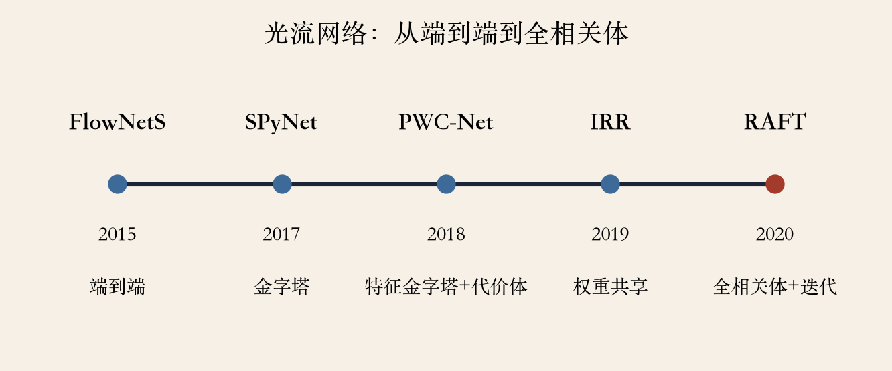
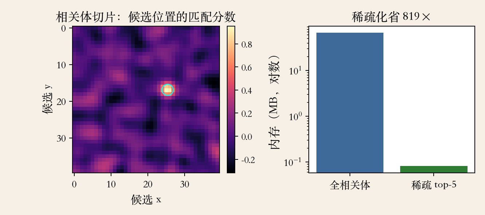
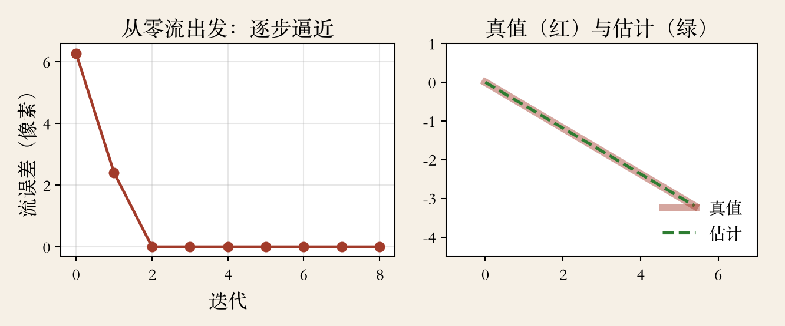

开场 · 深度学习光流
从几十个点到每个像素
- 上一集 KLT 只跟几十个特征点。
- 光流要给每个像素一个位移。
- 手工方法要设计特征、窗口、平滑项。
- 深度学习从带真值的视频里学。
依据：原书第 584–586 页
路线
KLT：稀疏点跟踪
光流：每像素一个位移
网络：从数据里学
早期代表
DeepFlow：手工卷积加深度结构
- 深度网络成了高性能光流的核心。
- DeepFlow 用非学习卷积和池化。
- 多尺度匹配代价交给能量最小化。
- 还不是端到端，参数仍由人定。
依据：原书第 584 页
位置
手工特征加深度结构
证明多层聚合有用
变分框架做优化
FlowNet
FlowNet：两帧进，光流出
- FlowNetS 是完整端到端编码器-解码器。
- 训练数据是作者合成的 FlyingChairs。
- FlowNetC 先用相关网络算局部代价体。
- 两条路：直接回归、先算相关。
依据：原书第 584 页
级联细化
FlowNet 2.0：先挪再修
- 先用初始光流把图像 warp 一下。
- 再用级联编码器-解码器细化。
- 第一遍猜大概，第二遍学残差。
- 由粗到细的深度学习版本。
依据：原书第 584 页
金字塔路线
SPyNet：金字塔加网络预测
- 用图像金字塔和光流金字塔。
- 由粗到细做 warp 和细化。
- SPyNet 最早系统探索这条路。
- 小图估大运动，逐层只修一点。
依据：原书第 584 页
对照
和 KLT 金字塔同直觉
搜索换成网络
小图估大运动
光流网络 · 程序生成
PWC-Net：四块清楚的积木
- PWC-Net 用特征金字塔和 warp。
- 按正负四像素位移做点积，得代价体。
- 多层 CNN 用代价体和上一层光流细化。
- 上下文网络用膨胀卷积扩大感受野。
依据：原书第 584–585 页

光流网络时间线：从端到端到全相关体｜程序生成，未用教材或论文原图
权重共享
IRR：同一套权重反复修
- 不再级联一堆不同的网络。
- 每层复用同一套结构和卷积权重。
- 可以画成卷起来的循环网络。
- 参数更少，精度反而更好。
依据：原书第 585 页
无监督训练
无监督：用视频当老师
- 没有真值光流，只用真实视频。
- 比较光度损失、遮挡估计、平滑约束。
- 提出代价体归一化等四点改进。
- 数据可以很多，但老师也会犯错。
依据：原书第 585 页
四点改进
代价体归一化
遮挡梯度停止
原生分辨率平滑
自监督图像缩放
不确定性
不确定性：学会说不知道
- 同质区域和遮挡区域带来不确定。
- HD3 在多个分辨率上建模对应分布。
- LiteFlowNet3 用代价体调制和流场变形。
- 会报不确定，比盲目给一个数有用。
依据：原书第 586 页
全相关体 · 程序生成
RAFT：一次建表，多次查表
- 预先算完整的宽乘高平方相关体。
- 每次迭代按当前光流去查表。
- 全配对保留所有候选，不会永久丢。
- 代价是内存大。
依据：原书第 586 页；本集实验

相关体切片：峰值在真值附近；稀疏 top-5 省 819 倍内存｜程序生成，未用教材或论文原图
稀疏相关与基准
稀疏相关：快，但可能漏
- 每个参考特征只存最近 k 个匹配。
- 稀疏相关体还能进一步加速。
- Robust Vision Challenge 上几个变体都好。
- 选型还要看数据、分辨率、延迟预算。
依据：原书第 586 页
取舍
全相关：所有候选都查
稀疏：只记前几个
快很多，但可能漏
任务导向微调
选型：为下游任务微调
- 除了看榜单，更靠谱的是按用途评估。
- 尽可能在问题专用数据上微调。
- Xue 等把 SPyNet 在 Vimeo-90K 上微调。
- 任务导向光流在三个任务上超过更准网络。
依据：原书第 586 页
相关体实验
实验：相关体的峰与歧义
- 64×64 图，全相关体 1677 万个元素。
- 单精度约 67.1 MB。
- 稀疏 top-5 为 0.082 MB，省 819 倍。
- 重复纹理峰值比 1.010，提示不可信。
依据：本集实验
读数
亚像素误差 0.009 像素
唯一纹理峰值比 2.52
只算相关值，索引另计
迭代细化 · 程序生成
迭代：查表，修一点
- 从零位移出发，误差 6.28 像素。
- 第一轮降到 2.41，第二轮 0.009。
- 之后保持，相关体不变。
- 亮度乘 1.6 加 0.1，误差 0.007。
依据：本集实验

迭代细化：从零位移 6.28 像素降到 0.009 像素｜程序生成，未用教材或论文原图
边界与选型
边界：大运动加细结构
- 由粗到细的 warp 方法都怕快速细结构。
- 细结构在粗层可能根本看不见。
- 全相关体缓解，但没消灭遮挡和无纹理。
- 选型先问真值、微调、延迟和内存。
依据：原书第 585 页脚注
收束 · 下一集应用
特征、相关、迭代
- 深度光流把特征、相关、warp 拆成积木。
- 相关体是配对关系的查找表。
- RAFT 用全配对加循环细化。
- 下一集：视频防抖、慢动作、插帧。
依据：原书第 584–586 页